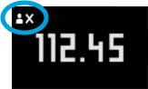

| 4/6 | Le Smart Body Analyzer vous identifie automatiquement sur la base de votre dernier poids connu. Si l'identification échoue, la balance affiche le symbole suivant :  Dans ce cas, votre mesure de poids apparaîtra dans la section "Mesures inconnues" de l'application. Pour assurer une bonne identification lors des prochaines pesées, veillez à vous assigner manuellement ces mesures en visitant la section "Mesures inconnues" dans le menu principal de l'application. |